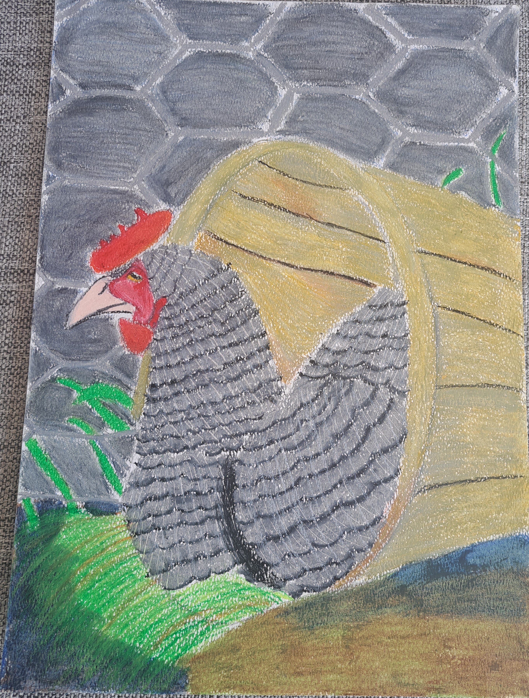

Visualisation Techniques(Drawing and illistrations)
Project 2
Bird Scenery
The aim of the project was to translate realism to paper by focusing
on the basic elements of art and the princilples of design. To explore
the element of color by using it to communicate meaning by using oil pastels.

Project 3
Comic Strip Layout
To explore the application of different perspectives to tell a
story through illustrations.To create and apply the illusion of space and movement on a
2D surface by using perspective, the kinaesthetic response,
the decisive movement, and the before and after effect to
tell a story.